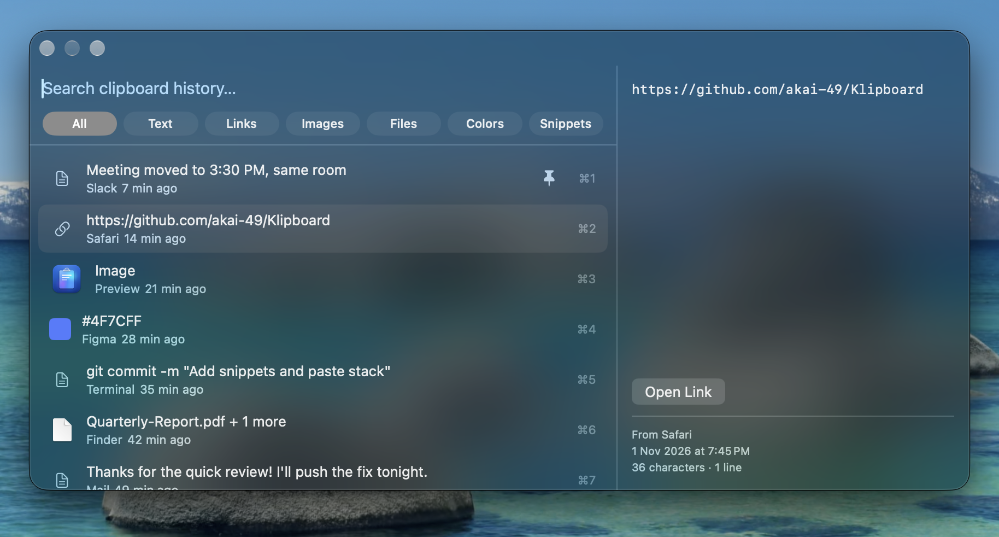
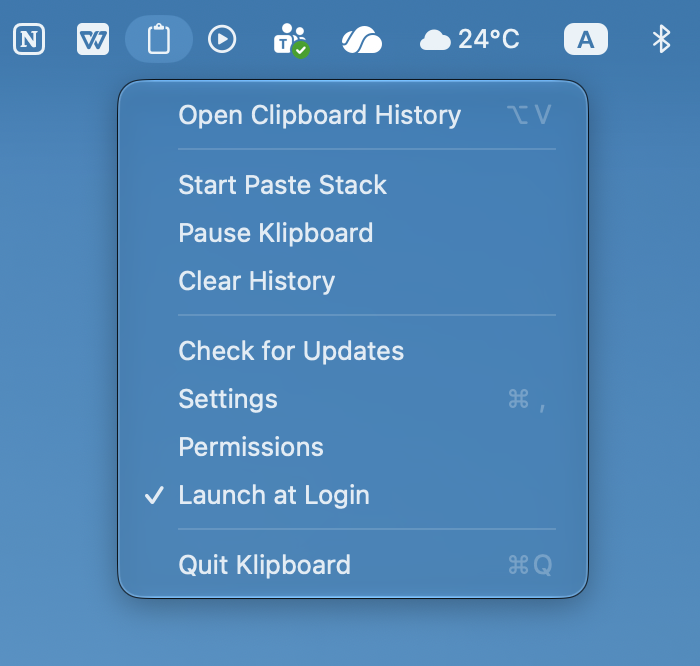

A clipboard history panel for Mac.
Klipboard lives in your menu bar and remembers what you copy, so you can search through your clips and paste them back anywhere with ⌥V.
brew install --cask akai-49/klipboard/klipboard

Features
Find and paste
- Open from anywhere: Press ⌥V (or your custom shortcut). Klipboard pastes the chosen item straight into whatever app you were using.
- Search as you type: Filter through text contents, file names, custom labels, notes, and the application you copied from.
- Type filters: Switch between All, Text, Links, Images, Files, Colors, and Snippets using the filter chips or with ⌘← and ⌘→.
- Quick paste: Press ⌘1-⌘9 to paste one of the first nine items directly without navigating.
- Paste plain text: Hold Shift when pasting (⇧↩ or ⇧-click) to strip styling, or turn on plain text pasting by default in Settings.
- Full previews: Press Space (when search is clear) or ⌘Y to inspect complete text, full images, Quick Look documents, hex and RGB color codes, and notes. Optional preview on hover.
- Resizable window: Drag any edge to resize the panel. Klipboard preserves your chosen window dimensions across launches.
What it keeps
- All clip types: Remembers plain text, rich text, links, images, colors, and files. Multiple files copied together are kept as a single history item.
- Automatic screenshots: Screenshots saved to files (⌘⇧3, ⌘⇧4, ⌘⇧5) appear in your clipboard automatically, ready to paste. Can be turned off in Settings.
- Move to top on copy: Copying an item already in your history moves it back to the top instead of creating a duplicate.
- Copied files stay working: Klipboard keeps a local copy up to a size you specify, so files still paste even if the original file is moved or deleted. On APFS volumes, this takes no additional disk space.
- Rename and notes: Right-click any clip to rename it or add a personal note. Both are indexed in search and shown in previews.
- Snippets: Keep frequently used text on hand, like postal addresses or canned replies. Add them in Settings or right-click any clip to save it as a snippet.
- Pins and favorites: Pin or favorite clips so they are never removed by history limits or auto-cleanups.
- Paste stack: Turn on Paste Stack from the menu bar, copy several items in sequence, and press ⌃⌥V to paste them in the order you copied them. The menu bar icon shows how many items remain.
Privacy and control
- Password manager skipping: Automatically ignores passwords copied from 1Password, Bitwarden, Apple Keychain, and apps using standard nspasteboard.org markers.
- Pause recording: Pause tracking from the menu bar or a recorded shortcut. Anything copied while paused is never saved.
- Ignore apps: Exclude specific applications from ever saving clipboard items.
- History limits and auto-delete: Set any clip limit or keep it unlimited. Old items can be deleted automatically after 1, 7, 30, or a custom number of days.
- Clear history: Clear your history from the menu bar anytime, with an option to keep your pinned and favorite items intact.
- Backup and restore: Export history, snippets, and cached files into a single .klipboard archive, or import one from Settings.
- Offline by design: No network requests, accounts, or telemetry. All data stays locally on your Mac in
~/Library/Application Support/Klipboard/.
Settings
Klipboard lives in your menu bar and stays out of the Dock. It starts at login, uses around 40 MB of RAM, and sits close to 0% CPU while idle. Every limit and shortcut can be customized in Settings (⌘,):
| Tab | Options |
|---|---|
| General | History size limit, auto-delete duration, screenshot capture, file cache limits, plain text defaults, quick paste modifier keys, hover preview delay, automatic Sparkle updates, backup import and export, and permissions check. |
| Shortcuts | Custom shortcut recording for Open Klipboard, Paste Next from Stack, Start or Stop Paste Stack, and Pause or Resume Recording. |
| Privacy | Password manager exclusion, ignored applications list, maximum text size, maximum image size, and clipboard polling frequency. |
| Snippets | Create, edit, and organize saved snippets. |

Keyboard shortcuts
Shortcuts can be customized in Settings.
| Shortcut | Action |
|---|---|
| ⌥V | Open or close Klipboard |
| ⌃⌥V | Paste next item from the paste stack |
| ↑ ↓ | Navigate through history |
| Return or click | Paste selected item |
| ⇧Return or ⇧-click | Paste as plain text |
| ⌘1-⌘9 | Paste item 1-9 directly |
| ⌘← ⌘→ | Switch filter category |
| Space or ⌘Y | Show or hide preview |
| ⌘⌫ | Delete selected item |
| Esc | Close preview, then close the panel |
| Right-click | Context menu: paste plain text, pin, favorite, rename, edit note, save as snippet, reveal in Finder, preview, delete |
Installation
Updates install automatically in the background after this version via Sparkle.
Homebrew Cask
If you use Homebrew, install the cask directly:
brew install --cask akai-49/klipboard/klipboard
Terminal installer
A single command that downloads the DMG, installs Klipboard to your Applications folder, removes the macOS quarantine attribute, and opens the app:
curl -fsSL https://klipboard-beryl.vercel.app/install.sh | bash
Direct download
Download Klipboard.dmg (or visit GitHub Releases). Open the disk image and drag Klipboard to your Applications folder.
First launch on macOS (Gatekeeper note):
Because Klipboard is a personal open-source project and is not signed with a paid Apple Developer certificate, macOS may show a dialog saying the app was blocked.
- Right-click (or Control-click) Klipboard.app in Finder, choose Open, and click Open in the prompt.
- Or open System Settings > Privacy & Security, scroll down to the Security section, and click Open Anyway.
- Or paste this command into Terminal to clear the attribute:
xattr -cr /Applications/Klipboard.app && open /Applications/Klipboard.app
Permissions
Klipboard requires Accessibility permission (named Device Control and Data Access on newer macOS versions) to paste clips directly into your active window. Without it, clicking an item copies it to your clipboard so you can press ⌘V manually.
On first launch, a welcome window guides you through granting this permission in System Settings. If permissions are ever lost after rebuilding or updating, you can open the window again from the menu bar under Permissions..., or reset and re-grant using Terminal:
tccutil reset All com.abhishek.Klipboard
If macOS asks for permission to access your Desktop folder, allow it so screenshots you capture can be saved to your clipboard history.
Build from source
Requires macOS 14.0 or later and Xcode Command Line Tools (xcode-select --install). Clone the repository from GitHub and run:
./build-release.sh
System requirements
- macOS 14.0 Sonoma or later
- Universal binary running natively on Apple Silicon and Intel Macs
- Memory: approximately 40 MB of RAM
- Completely offline, no telemetry or network traffic